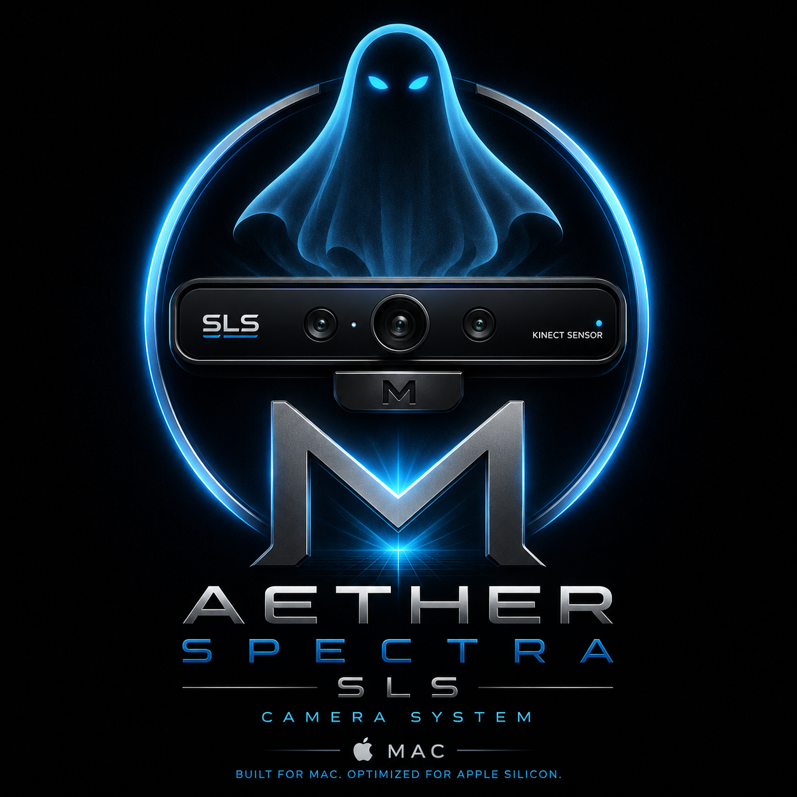

SLS Camera System
Aether Spectra SLS Camera System
Aether Spectra SLS is a Mac-focused camera system for structured-light style field observation, visual documentation, and research-oriented review. It is part of the broader technology program, supporting investigators who need careful capture, context, and responsible interpretation.